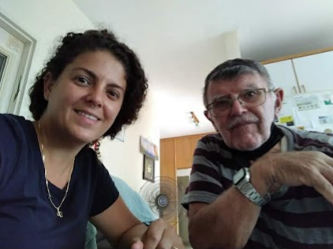
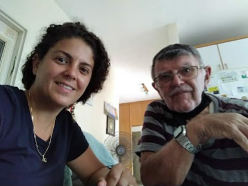

YUVAL HADDY
Intraduction
My Occupation
My Hobbies
Contact Me....
Intraduction
Hi, this is me ....
My name is Yuval. I'm married with 2 girls and i am from Rishon Lezion
My Occupation
I am a QA engineer for the last 10 years.
I really love and enjoy what I am doing there for I decided to learn QA Automation
I believe that when you love something you do it the best.
Experienced in writing test documentation.
Very good understanding in QA methodologies (Agile,Waterfall).
Working with management tools: Test Quality center, JIRA.
Good Knowledge of SQL queries of Oracle, SQL Server.
Working with Postman tools in API services to check information transfer.
Experience with Web testing.
My Hobbies
Volunteering at the Association for Holocaust Survivors
The Corona period posed a challenge for all of us and especially for the third group age people.
They were required to handle loneliness, complex technological challenges
and they had to adapt to the changes in this period.
Me and my daghter,the younger generation, wanted to help and be on the giving side.
We want teach our children what free love and giving without acceptance is.
Then we found the Holocaust Welfare Fund.
My daughter and I volunteer at the Holocaust Survivors Association.
We attend a weekly meeting at the Survivor's House teaching them to use an accessible tablet for seniors.
we teach them how to connect via tablet to WhatsApp, video calls, phone calls, camera use and video.
 

The Holocaust Welfare Fund
Ever since I was a girl sports is my favorite hobby.
I love to run as a hobby.
In the past I have participated the Tel Aviv night race twice and on Nahal Sorek race.
I mostly like to run alone and then I clear my head.
Here are some certificates I got for races I participated in.
Contact Me....
My Linkedin